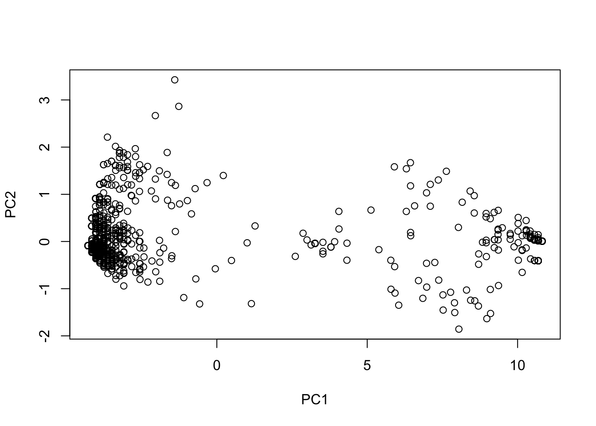

Week 7 Speciation and Hybridization
7.1 Match
First of all, great news - no packages to install today!! The first command we’ll learn is match. match helps you match up two vectors that have the same values (or subset of values). For example, so far I’ve always given you metadata in the same order as your genotype files. But what if I didnt? We can use match to reorder the metadata so that it matches the genotype dataframe. Here’s how it works. First, let’s make two vectors with roughly the same values in different orders.
A <- c("FOX","BEAR","DOG","CAT","MOUSE")
B <- c("BEAR","CAT","MOUSE","FOX","DOG")
match(A,B)## [1] 4 1 5 2 3match looks at each value in the first vector and returns the index of that value in the second vector. Note that the order matters:
match(B,A)## [1] 2 4 5 1 3We can then use match to reorder the vectors to match:
C <- B[match(A,B)]
C## [1] "FOX" "BEAR" "DOG" "CAT" "MOUSE"So here we’ve taken the B vector and reordered it to match A.
7.2 Dealing with missing data
Sometimes data aren’t perfect. Sometimes we have missing values. How do we deal with them, or at least find them? Let’s look at he airquality example dataset:
data("airquality")
head(airquality)## Ozone Solar.R Wind Temp Month Day
## 1 41 190 7.4 67 5 1
## 2 36 118 8.0 72 5 2
## 3 12 149 12.6 74 5 3
## 4 18 313 11.5 62 5 4
## 5 NA NA 14.3 56 5 5
## 6 28 NA 14.9 66 5 6Notice that there are several NA values. The first thing we might want to do is to identify all rows that have NA values. We can identify rows with missing data in a particular column using the is.na function:
is.na(airquality$Ozone)## [1] FALSE FALSE FALSE FALSE TRUE FALSE FALSE FALSE FALSE TRUE FALSE FALSE
## [13] FALSE FALSE FALSE FALSE FALSE FALSE FALSE FALSE FALSE FALSE FALSE FALSE
## [25] TRUE TRUE TRUE FALSE FALSE FALSE FALSE TRUE TRUE TRUE TRUE TRUE
## [37] TRUE FALSE TRUE FALSE FALSE TRUE TRUE FALSE TRUE TRUE FALSE FALSE
## [49] FALSE FALSE FALSE TRUE TRUE TRUE TRUE TRUE TRUE TRUE TRUE TRUE
## [61] TRUE FALSE FALSE FALSE TRUE FALSE FALSE FALSE FALSE FALSE FALSE TRUE
## [73] FALSE FALSE TRUE FALSE FALSE FALSE FALSE FALSE FALSE FALSE TRUE TRUE
## [85] FALSE FALSE FALSE FALSE FALSE FALSE FALSE FALSE FALSE FALSE FALSE FALSE
## [97] FALSE FALSE FALSE FALSE FALSE TRUE TRUE FALSE FALSE FALSE TRUE FALSE
## [109] FALSE FALSE FALSE FALSE FALSE FALSE TRUE FALSE FALSE FALSE TRUE FALSE
## [121] FALSE FALSE FALSE FALSE FALSE FALSE FALSE FALSE FALSE FALSE FALSE FALSE
## [133] FALSE FALSE FALSE FALSE FALSE FALSE FALSE FALSE FALSE FALSE FALSE FALSE
## [145] FALSE FALSE FALSE FALSE FALSE TRUE FALSE FALSE FALSEWe can then ask for the indexes of those “TRUE” values and subset the data with those indexes:
ind <- is.na(airquality$Ozone)
sub <- airquality[ind,]
head(sub)## Ozone Solar.R Wind Temp Month Day
## 5 NA NA 14.3 56 5 5
## 10 NA 194 8.6 69 5 10
## 25 NA 66 16.6 57 5 25
## 26 NA 266 14.9 58 5 26
## 27 NA NA 8.0 57 5 27
## 32 NA 286 8.6 78 6 1More likely, though, we’ll want to want a subset without missing data. We can get this using ! which, in programming languages often makes a function the opposite meaning. So, !is.na helps us find entries that do not have missing data:
ind <- !is.na(airquality$Ozone)
sub <- airquality[ind,]
head(sub)## Ozone Solar.R Wind Temp Month Day
## 1 41 190 7.4 67 5 1
## 2 36 118 8.0 72 5 2
## 3 12 149 12.6 74 5 3
## 4 18 313 11.5 62 5 4
## 6 28 NA 14.9 66 5 6
## 7 23 299 8.6 65 5 7What if we want to look at missing data across the entire dataframe? First, we can use the function complete.cases to ask which rows have no missing data. We can also use the which function to ask for the indexes of those rows. These indexes could be used to subset the dataframe into only complete rows:
complete.cases(airquality)## [1] TRUE TRUE TRUE TRUE FALSE FALSE TRUE TRUE TRUE FALSE FALSE TRUE
## [13] TRUE TRUE TRUE TRUE TRUE TRUE TRUE TRUE TRUE TRUE TRUE TRUE
## [25] FALSE FALSE FALSE TRUE TRUE TRUE TRUE FALSE FALSE FALSE FALSE FALSE
## [37] FALSE TRUE FALSE TRUE TRUE FALSE FALSE TRUE FALSE FALSE TRUE TRUE
## [49] TRUE TRUE TRUE FALSE FALSE FALSE FALSE FALSE FALSE FALSE FALSE FALSE
## [61] FALSE TRUE TRUE TRUE FALSE TRUE TRUE TRUE TRUE TRUE TRUE FALSE
## [73] TRUE TRUE FALSE TRUE TRUE TRUE TRUE TRUE TRUE TRUE FALSE FALSE
## [85] TRUE TRUE TRUE TRUE TRUE TRUE TRUE TRUE TRUE TRUE TRUE FALSE
## [97] FALSE FALSE TRUE TRUE TRUE FALSE FALSE TRUE TRUE TRUE FALSE TRUE
## [109] TRUE TRUE TRUE TRUE TRUE TRUE FALSE TRUE TRUE TRUE FALSE TRUE
## [121] TRUE TRUE TRUE TRUE TRUE TRUE TRUE TRUE TRUE TRUE TRUE TRUE
## [133] TRUE TRUE TRUE TRUE TRUE TRUE TRUE TRUE TRUE TRUE TRUE TRUE
## [145] TRUE TRUE TRUE TRUE TRUE FALSE TRUE TRUE TRUEwhich(complete.cases(airquality))## [1] 1 2 3 4 7 8 9 12 13 14 15 16 17 18 19 20 21 22
## [19] 23 24 28 29 30 31 38 40 41 44 47 48 49 50 51 62 63 64
## [37] 66 67 68 69 70 71 73 74 76 77 78 79 80 81 82 85 86 87
## [55] 88 89 90 91 92 93 94 95 99 100 101 104 105 106 108 109 110 111
## [73] 112 113 114 116 117 118 120 121 122 123 124 125 126 127 128 129 130 131
## [91] 132 133 134 135 136 137 138 139 140 141 142 143 144 145 146 147 148 149
## [109] 151 152 153sub <- airquality[which(complete.cases(airquality)),]
head(sub)## Ozone Solar.R Wind Temp Month Day
## 1 41 190 7.4 67 5 1
## 2 36 118 8.0 72 5 2
## 3 12 149 12.6 74 5 3
## 4 18 313 11.5 62 5 4
## 7 23 299 8.6 65 5 7
## 8 19 99 13.8 59 5 8This is useful if you need the indexes to work across multiple dataframes (more on that later). But, if you just want to remove rows with missing data, you can just us na.omit:
sub <- na.omit(airquality)
head(sub)## Ozone Solar.R Wind Temp Month Day
## 1 41 190 7.4 67 5 1
## 2 36 118 8.0 72 5 2
## 3 12 149 12.6 74 5 3
## 4 18 313 11.5 62 5 4
## 7 23 299 8.6 65 5 7
## 8 19 99 13.8 59 5 8Finally, some functions will not automatically work if you have missing data. For example, look what happens when you try to fine the mean Ozone value across the dataset:
mean(airquality$Ozone)## [1] NAWe need to tell the function what to do with NA values. The easiest thing to do is just ignore them:
mean(airquality$Ozone,na.rm=T)## [1] 42.12931
7.3 Writing your own functions
So far, we’ve used a bunch of different functions that are provided by either the basic installation of R or various packages. But you can also write your own!
Let’s say we are interested in a very specific metric calculated as follows: (mean of all values)/(number of non-missing datapoints)
We want to calculate this for each row. We know that we can do row by row calculations using the apply function, but how do we put this weird function into apply? First, we need to define our own function. This is how we do that:
ourfunction <- function(x) {
top <- mean(x,na.rm=T)
bottom <- length(!is.na(x))
metric <- top/bottom
return(top)
}Here we can think of x as each row that will be passed through the function. At the end of the function we use return to tell the function what value we want to get out. We could apply this to any set of numbers:
a <- c(1,4,54,72,4,1)
ourfunction(a)## [1] 22.66667Or we can apply our new function to each row in the dataframe:
ourmetric <- apply(airquality,MARGIN=1,ourfunction)
ourmetric## [1] 51.90000 40.16667 42.60000 68.91667 20.07500 23.98000 67.93333 33.96667
## [9] 20.35000 57.32000 20.78000 61.28333 65.70000 64.31667 29.03333 74.08333
## [17] 73.50000 30.40000 75.91667 25.28333 17.28333 74.60000 21.28333 37.66667
## [25] 33.92000 73.98000 24.25000 24.66667 71.15000 76.28333 72.56667 75.92000
## [33] 75.74000 66.82000 57.84000 64.92000 73.86000 43.45000 76.18000 80.13333
## [41] 79.41667 75.98000 73.84000 46.66667 89.16000 86.70000 54.31667 72.78333
## [49] 25.86667 40.25000 43.71667 52.06000 32.94000 40.12000 72.46000 49.80000
## [57] 49.00000 32.66000 44.70000 31.58000 53.00000 83.35000 66.70000 61.36667
## [65] 41.38000 56.43333 76.81667 76.68333 79.55000 80.45000 62.23333 49.52000
## [73] 63.38333 52.98333 83.58000 28.55000 69.81667 70.88333 76.88333 64.01667
## [81] 67.75000 21.98333 75.54000 83.70000 83.26667 76.00000 37.43333 44.33333
## [89] 70.90000 75.73333 74.06667 73.53333 36.48333 22.96667 32.23333 36.58000
## [97] 28.08000 34.32000 80.83333 72.38333 72.00000 68.12000 50.70000 58.91667
## [105] 69.25000 55.61667 35.50000 34.05000 36.71667 41.23333 65.15000 58.38333
## [113] 66.91667 26.88333 74.72000 62.95000 87.23333 69.33333 56.34000 70.28333
## [121] 79.38333 76.88333 68.71667 61.81667 63.85000 60.63333 65.10000 41.73333
## [129] 39.75000 63.15000 58.05000 59.15000 64.11667 65.98333 65.41667 61.88333
## [137] 22.98333 38.58333 65.48333 58.13333 25.55000 61.38333 56.00000 59.60000
## [145] 24.70000 49.71667 28.05000 24.60000 55.81667 54.24000 55.21667 45.16667
## [153] 60.250007.4 Hybrid allele frequencies
Today we’ll be looking at the data from Lamer et al. (2015). There are two files, a genotype table and metadata. Let’s first read in the genotype table:
genofile <- read.csv("data/lamar_genotypes.csv")
head(genofile)## ID snp1 snp2 snp3 snp4 snp5 snp6 snp7 snp8 snp9 snp10 snp11 snp12 snp13
## 1 ILAG 1 0 0 0 0 0 0 0 0 0 0 0 0 0
## 2 ILAG 2 0 0 1 0 0 0 0 0 0 0 0 0 0
## 3 ILAG 3 0 0 0 0 0 0 0 0 0 0 0 0 0
## 4 ILAG 4 0 0 1 0 0 0 0 0 0 0 0 0 0
## 5 ILAG 5 0 0 0 0 0 0 0 0 0 0 0 0 0
## 6 ILAG 6 0 0 0 0 0 0 0 0 0 0 0 0 0
## snp14 snp15 snp16 snp17 snp18 snp19 snp20 snp21 snp22 snp23 snp24 snp25 snp26
## 1 NA 0 0 0 0 0 0 0 0 0 0 0 0
## 2 0 0 0 0 0 0 0 0 0 0 0 0 NA
## 3 0 0 0 0 0 0 0 0 0 0 0 0 0
## 4 0 0 0 0 0 0 0 0 0 0 0 0 0
## 5 NA 0 0 0 0 0 0 0 0 NA NA NA NA
## 6 0 0 0 0 0 0 0 0 0 NA NA NA NA
## snp27 snp28 snp29 snp30 snp31 snp32 snp33 snp34 snp35 snp36 snp37 snp38 snp39
## 1 0 0 0 0 0 0 0 0 0 0 0 0 0
## 2 0 0 0 0 0 0 0 0 0 0 NA 0 0
## 3 0 0 0 0 0 1 0 0 0 0 0 0 0
## 4 0 0 0 0 0 0 0 0 0 0 0 0 0
## 5 NA NA NA NA NA NA NA NA NA NA NA NA NA
## 6 NA NA NA NA NA NA NA NA NA NA NA NA NA
## snp40 snp41 snp42 snp43 snp44 snp45 snp46 snp47 snp48 snp49 snp50 snp51 snp52
## 1 0 0 0 0 0 0 0 0 0 0 0 0 0
## 2 0 0 0 0 0 0 0 0 0 0 0 0 0
## 3 0 1 0 0 0 0 0 0 0 0 0 0 0
## 4 0 0 0 0 0 0 0 0 0 0 0 0 0
## 5 NA NA NA NA NA 0 0 0 1 0 0 0 0
## 6 NA NA NA NA NA 0 0 0 0 0 0 0 0
## snp53 snp54 snp55 snp56 snp57
## 1 0 0 0 0 0
## 2 0 0 0 0 0
## 3 0 0 0 0 0
## 4 0 0 0 0 0
## 5 0 0 0 0 0
## 6 0 0 0 0 0Here the first column is a sample ID. The rest of the columns are genotypes at diagnostic SNPs that distinguish between the two carp species in the paper. Values are 0, 1, or 2 and indicate the number of bighead carp alleles at that SNP. So, for example, a 2 means that individual is homozygous for the bighead carp allele while a 0 means that individual is homozygous for the silver carp allele. Let’s split the dataframe into the sample IDs and a frame with just the genotypes:
IDs <- genofile[,1]
genos <- genofile[,2:ncol(genofile)]Now let’s read in the metadata:
meta <- read.csv("data/lamar_metadata.csv",stringsAsFactors = T)
head(meta)## ID Reach River Genetic.ID Field.ID Length Weight Age
## 1 ILAG 566 LaGrange Reach Illinois Bx4SV <NA> NA NA NA
## 2 ILAG 567 LaGrange Reach Illinois Bx4SV <NA> NA NA NA
## 3 ILAG 568 LaGrange Reach Illinois Bx4SV <NA> NA NA NA
## 4 ILAG 569 LaGrange Reach Illinois SV <NA> NA NA NA
## 5 ILAG 570 LaGrange Reach Illinois SV <NA> NA NA NA
## 6 ILAG 571 LaGrange Reach Illinois SV <NA> NA NA NA
## Birth.year
## 1 NA
## 2 NA
## 3 NA
## 4 NA
## 5 NA
## 6 NANotice that the metadata and the genotypes are not in the same order. We’ll use match like we did above to reorder the metadata:
ordermeta <- meta[match(IDs,meta$ID),]Now that the genotype and metadata are aligned, we can do lots of different calculations. Maybe we want to calculate the fraction of bighead carp alleles for each individual. We can write a function for that:
allelefreq <- function(x) {
length <- length(na.omit(x))
sum <- sum(x, na.rm=T)
freq <- sum/(length*2)
return(freq)
}The first line of the function calculates the length of the vector (the number of loci at which an individual is genotyped) - notice that we have omitted missing data. The second line simply adds the genotypes. We can do this because we know that hetorozygous individuals are coded as 1 and homozygous bighead carp individuals are coded as 2. The third row calculates the frequency of bighead carp alleles. Why do we have to multiple length by 2? Now we can apply that function to our genotype data:
bigAlleles <- apply(genos,1,allelefreq)
summary(bigAlleles)## Min. 1st Qu. Median Mean 3rd Qu. Max.
## 0.00000 0.00000 0.01754 0.31639 0.99029 1.00000Now we can do things like look at the mean frequency across different species classes (how accurate were our field IDs) or rivers (which river has the most introduced alleles?):
aggregate(bigAlleles,list(ordermeta$Field.ID),mean)## Group.1 x
## 1 BHCP 0.98366800
## 2 Hybrid 0.76778692
## 3 SVCP 0.02400816
## 4 UNKN 0.28485652a <- aggregate(bigAlleles,list(ordermeta$River),mean)
7.5 Making a PCA
Now we want to make a PCA to visualize the similarity between individuals. We can do this with the prcomp function, but this function doesn’t like missing data. There are some ways to deal with missing genotypes without having to discard them, but since we have a lot of data we will just remove individuals that have any missing data for now. We also have to subset the metadata to match:
subgen <- na.omit(genos)
head(subgen)## snp1 snp2 snp3 snp4 snp5 snp6 snp7 snp8 snp9 snp10 snp11 snp12 snp13 snp14
## 3 0 0 0 0 0 0 0 0 0 0 0 0 0 0
## 4 0 0 1 0 0 0 0 0 0 0 0 0 0 0
## 19 0 0 0 0 0 0 0 0 0 0 0 0 0 0
## 25 0 0 0 0 0 0 0 0 0 0 0 0 0 0
## 26 0 0 0 0 0 0 0 0 0 0 0 0 0 0
## 27 0 0 0 0 0 0 0 0 0 0 0 0 0 0
## snp15 snp16 snp17 snp18 snp19 snp20 snp21 snp22 snp23 snp24 snp25 snp26
## 3 0 0 0 0 0 0 0 0 0 0 0 0
## 4 0 0 0 0 0 0 0 0 0 0 0 0
## 19 0 0 0 0 0 0 0 0 0 0 0 0
## 25 0 0 0 0 0 0 0 0 0 0 0 0
## 26 0 0 0 0 0 0 0 0 0 0 0 0
## 27 0 0 0 0 0 0 0 0 0 0 0 0
## snp27 snp28 snp29 snp30 snp31 snp32 snp33 snp34 snp35 snp36 snp37 snp38
## 3 0 0 0 0 0 1 0 0 0 0 0 0
## 4 0 0 0 0 0 0 0 0 0 0 0 0
## 19 0 0 0 0 0 0 0 0 0 0 0 0
## 25 0 0 0 0 0 0 0 0 0 0 0 0
## 26 0 0 0 0 0 0 0 0 0 0 0 0
## 27 0 0 0 0 0 0 0 0 0 0 0 0
## snp39 snp40 snp41 snp42 snp43 snp44 snp45 snp46 snp47 snp48 snp49 snp50
## 3 0 0 1 0 0 0 0 0 0 0 0 0
## 4 0 0 0 0 0 0 0 0 0 0 0 0
## 19 0 0 0 0 0 0 0 0 0 0 0 0
## 25 0 0 0 0 0 0 0 0 0 0 0 0
## 26 0 0 0 0 0 0 0 0 0 0 0 0
## 27 0 0 0 0 0 0 0 0 0 0 0 0
## snp51 snp52 snp53 snp54 snp55 snp56 snp57
## 3 0 0 0 0 0 0 0
## 4 0 0 0 0 0 0 0
## 19 0 0 0 0 0 0 0
## 25 0 0 0 0 0 0 0
## 26 0 0 0 0 0 0 0
## 27 0 0 0 0 0 0 0submeta <- ordermeta[complete.cases(genos),]
head(submeta)## ID Reach River Genetic.ID Field.ID Length Weight Age
## 1079 ILAG 3 LaGrange Reach Illinois Bx4SV SVCP 362 525 3
## 1080 ILAG 4 LaGrange Reach Illinois Bx4SV SVCP 371 600 1
## 1095 ILAG 19 LaGrange Reach Illinois SV SVCP 619 2550 4
## 1101 ILAG 25 LaGrange Reach Illinois SV SVCP 453 1050 2
## 1102 ILAG 26 LaGrange Reach Illinois SV SVCP 336 500 1
## 1103 ILAG 27 LaGrange Reach Illinois SV SVCP 364 600 1
## Birth.year
## 1079 2006
## 1080 2008
## 1095 2005
## 1101 2007
## 1102 2008
## 1103 2008This works because we know that genos and ordermeta are in the same order. Now we can use this subsetted data to calculate a PCA and plot it:
pca <- prcomp(subgen)
plot(pca$x)
This doesn’t really mean anything if we don’t categorize the dots. For now, let’s color them by “River”:
plot(pca$x,col=submeta$River,pch=19)
legend("topright", legend=levels(submeta$River), pch=19, col=1:nlevels(submeta$River))As you can see, there doesn’t seem to be obvious separation by River. What do you think is driving the patterns you see in this PCA?
7.6 Homework
For homework we will continue using the data from Lamer et al. (2015).There are two relevant files:
lamar_genotypes.csv Has SNP genotypes for each individual
lamar_metadata.csv contains information about location of sampling
###Homework 5: Write a script that does the following:
Read in the “lamar_genotypes.csv” and “lamar_metadata.csv.” Reorder the metadata so that samples in the same order as in the genotypes file.
Write a function that returns the proportion of data for each individual that is missing. Apply the function to your genotype data and print the summary.
Create a PCA. Color by Field.ID and add a legend.